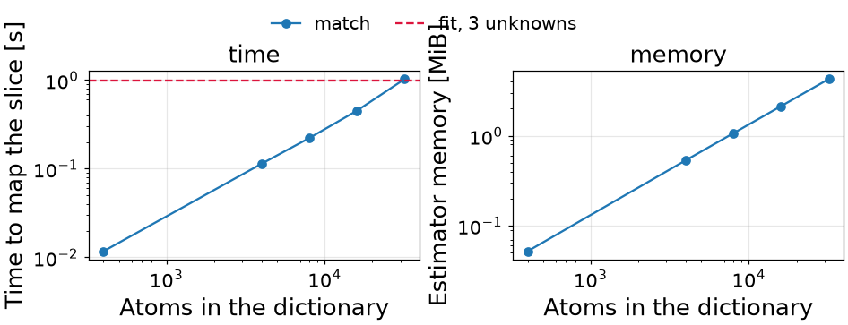
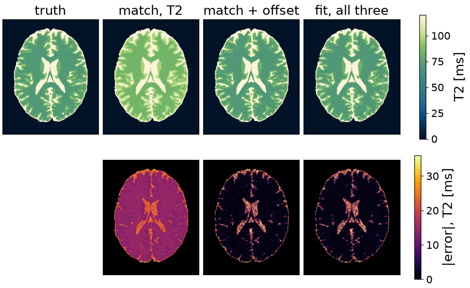

Note
Go to the end to download the full example code or to run this example in your browser via Binder.
T2 mapping by nonlinear least squares#
The scope of this notebook is to map T2 from a multi-echo spin echo by nonlinear least squares, and to compare it against a dictionary match on the same slice.
What decides the comparison is a nuisance parameter. A magnitude reconstruction sits on a noise floor, so the decay does not reach zero, and unlike the proton density that offset does not divide out of a normalized match. Ignore it and T2 is biased; put it on the grid and the grid multiplies. A fit pays one more column of the Jacobian instead, and gives up the guarantee that it found the global minimum.
The problem is stated over a simulator carrying the sequence and filled in
by an estimator. execution() decides where that work runs,
and the timings below are taken inside it.
import time
import numpy as np
import torch
import torchsim
from torchsim.estimators import DictionaryMatcher, NonlinearLeastSquares
from torchsim.simulators import MultiEchoSimulator
Phantom#
BrainWeb subject 0, slice 90: an axial slice at 1 mm through the lateral ventricles. BrainWeb publishes fuzzy memberships rather than labels, so each voxel holds a fraction of each tissue, and the relaxation times are weighted by those fractions. A third of the voxels are mixtures, so the truth is a continuum and not four values.

Text(0.5, 0.9878790357573323, 'BrainWeb subject 0, slice 90')
Measurement and noise floor#
Sixteen echoes out to 200 ms, scaled by the proton density and offset by a constant. A magnitude reconstruction rectifies the noise, so the late echoes measure the floor rather than zero, and a fit that does not model it absorbs it into T2.
ECHOES = 16
TE = torch.linspace(10.0, 200.0, ECHOES)
NOISE_STD = 0.005
FLOOR = 0.05
simulator = MultiEchoSimulator(TE=TE)
clean = simulator.simulate(T2=truth, M0=density, offset=FLOOR)
generator = torch.Generator().manual_seed(42)
measured = clean + NOISE_STD * torch.randn(clean.shape, generator=generator)
The short-T2 voxel is on the floor by the fourth echo, so most of its train says nothing about T2; the long-T2 one never reaches it.

Nonlinear fit#
What is unknown, over what range, and at what noise level. Every voxel steps together in the same pass, carries its own damping, accepts or rejects on its own, and drops out when it converges.
The bounds are not clipping. Each is kept by fitting a transformed variable, so no iterate leaves the interval and no bound sits on the answer. That also puts every parameter on one scale, which is what the damping assumes.
fitted floor, median 0.0500 against 0.05
Dictionary match#
The same problem given to a dictionary. Its grid needs no proton density: a match normalizes both sides, so any positive scale is free and one of the three parameters is gone before the grid is built. The offset survives normalization, so modelling it means putting it on the grid.
T2_GRID = torch.logspace(1.0, np.log10(500.0), 400)
match = DictionaryMatcher(simulator.bind(M0=1.0, offset=0.0)).fit(T2=T2_GRID, seed=0)
With the floor on the grid, the grid is the product of the two.
offsets = torch.linspace(0.0, 0.15, 40)
grid_t2, grid_offset = torch.meshgrid(T2_GRID, offsets, indexing="ij")
wide = DictionaryMatcher(simulator.bind(M0=1.0)).fit(
T2=grid_t2.reshape(-1), offset=grid_offset.reshape(-1), seed=0
)
Cost and accuracy#
Best of three passes each, after a warm-up. model is what the fitted estimator carries between volumes; peak is the high-water mark on the card while the slice was mapped, and a dash on a machine with no card.
method atoms train map model peak T2
----------------------------------------------------------------------------------
match, T2 only 400 0.0s 0.01s 0.1 MiB -- 17.9%
match, T2 x 10 offsets 4000 0.0s 0.11s 0.5 MiB -- 1.8%
match, T2 x 20 offsets 8000 0.0s 0.22s 1.1 MiB -- 1.8%
match, T2 x 40 offsets 16000 0.0s 0.45s 2.1 MiB -- 1.8%
match, T2 x 80 offsets 32000 0.0s 1.03s 4.3 MiB -- 1.7%
fit, T2 + M0, floor known -- 0.0s 0.61s 0.0 MiB -- 0.6%
fit, T2 + M0 + offset -- 0.0s 0.99s 0.0 MiB -- 1.8%
Interpretation#
The first row is the trap. A T2-only match is the quickest thing here and the most wrong, because the model it matched was not the model that produced the data. Nothing in the estimator says so: the residual it minimized is small, at the wrong T2.
With the offset on the grid the match recovers, and the cost of recovering is the point: ten values of one nuisance is ten times the atoms and ten times the memory, for a parameter that cost the fit one column.
The fit is the slower of the two in wall clock and stays that way here: a Levenberg-Marquardt loop is tens of passes where a match is one. What it does not do is grow. Each nuisance multiplies the grid again and adds one column to the Jacobian, so where the two cross is arithmetic; the memory has crossed already.

<matplotlib.legend.Legend object at 0x7f813a1da810>
Maps#

Limits#
There is no guarantee. The fit started every voxel at 100 ms and landed on the right answer everywhere, which is a property of an exponential: the residual of a single decay has one minimum. A model whose residual has several – a fingerprinting train, a fat-water fit at a wrong field map – can be started in the wrong basin and stay there. A match cannot, because it scores every atom.
Equality constraints belong in the model, not in the bounds. Two fractions
that must sum to one are written with one as the unknown and the other as
1 - f inside the model, so the constraint holds at every iterate.
Total running time of the script: (0 minutes 13.107 seconds)